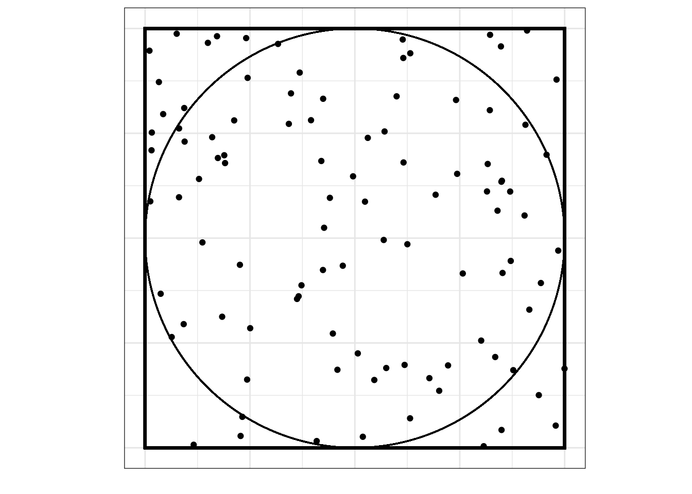
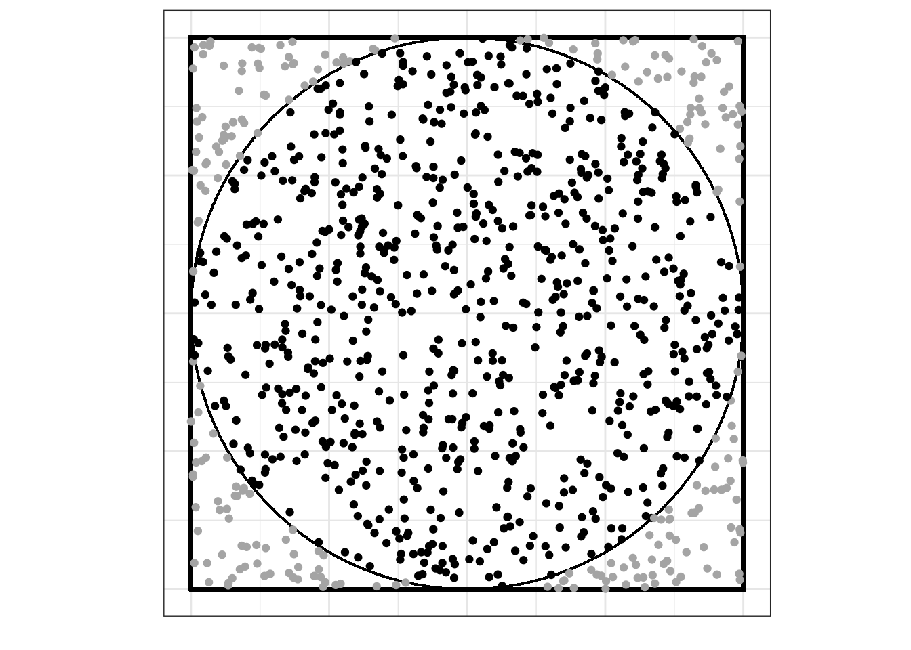

14 L14 // Анализ главных компонент и эксплораторный факторный анализ
14.1 Проклятие размености (curse of dimensionality)
С данными могут случиться две проблемы: либо их слишком мало, либо их слишком много. С первой проблемой многие так или иначе сталкивались — во-первых, не достигается требуемая статистическая мощность анализа (мало наблюдений), во-вторых, упускаем какие-либо закономерности (мало переменных). А в чем может быть проблема, если данных много?
14.1.1 Геометрическая вероятность
Возьмем квадрат, в который вписан круг:
Будем бросать в этот квадрат точки случайным образом:

Вопрос: какова вероятность, что случайно брошенная точка попадет в круг (событие \(A\))?
Мы можем воспользоваться статистическим подходом к вероятности, набросать побольше точек и посчитать, сколько из них попало в пределы круга:

Из визуализации видно, что в конечном итоге при очень большом количестве бросаний точек они заполнят всю площадь квадрата, а значит, и всю площадь круга, поэтому вероятность попадания случайно прошенной точки в круг равняется отношению площади круга к площади квадрата, то есть:
\[ \mathbb{P}(A) = \lim_{N \rightarrow \infty} \frac{n}{N} = \frac{S_\text{circle}}{S_\text{square}} \]
Можно расписать точнее, если вспомнить геометрические формулы:
\[ \mathbb{P}(A) = \frac{S_\text{circle}}{S_\text{square}} = \frac{\pi r^2}{a^2} = \frac{\pi \big(\frac{1}{2}a\big)^2}{a^2} = \frac{1}{4}\pi \approx 0.785 \]
Окей, это для \(\mathbb{R}^2\), то есть для пространства размерности два (оно же — плоскость). Теперь рассмотрим ситуацию для \(\mathbb{R}^3\), то есть для пространства размерности три.
\[ \mathbb{P}(A) = \frac{V_\text{ball}}{V_\text{cube}} = \frac{\frac{4}{3}\pi r^3}{a^3} = \frac{\frac{4}{3}\pi \big(\frac{1}{2}a\big)^3}{a^3} \approx 0.523 \]
В общем случае, для \(\mathbb{R}^k\) объем шара равен:
\[ \begin{split} k = 2n &, V = \frac{\pi^2}{n!}r^{2n} \\ k = 2n+1 &, V = \frac{2 \cdot (2\pi)^n}{(2n+1)!!} r^{2n+1} \end{split} \]
Можно аналитически доказать, что при \(k \to \infty : V \to 0\).
То есть, говоря более осязаемо, места вне шара становится больше. Набирая переменных, мы делаем расстояния между точками больше, из-за объем выборки должен расти экспоненциально, чтобы сохранялась адекватная точность оценки параметров. Это и называется проклятием размерности.
Что делать? Снижать размерность.
14.2 Факторный анализ vs анализ главных компонент
Так сложилось, что под термином «факторный анализ» часто смешиваются две вещи: анализ главных компонент и собственно факторный анализ. Кроме того, собственно факторный анализ также подразделяется на эксплораторный — когда мы ищем факторы — и конфирматорный — когда у нас есть гипотеза о структуре факторов, и нам необходимо ее подтвердить.
Анализ главных компонент и факторный анализ различаются в своей математической модели, своей изначальной идеологии, но дают сходные результаты и решают сходные задачи.
14.3 Задачи факторного анализа и анализа главных компонент
- Сокращение числа переменных
- Измерение неизмеримого (построение новых обобзеных показателей)
- Наглядное представление многомерных наблюдений
- Описание структуры взаимных связей между переменными
- Преодоление мультиколлинеарности (в регрессионном анализе)
- Заполнение пропущенных значений (при работе с разряженными матрицами)
и т.д.
14.4 Анализ главных компонент (Principal Component Analysis)
14.4.1 Математическая модель анализа главных компонент
Рассмотрим случайный вектор (матрицу) \((\mathbf{X}_1, \mathbf{X}_2, \dots, \mathbf{X}_k)\) (\(\mathbf{X}_i\) — некоторый столбец [числовых] данных). Мы хотим найти такую линейную комбинацию наших данных, у которой дисперсия максимальна. При это мы хотим домножать матрицу данных на вектор коэффициентов единичной длины, чтобы искусственно не раздувать дисперсию.
Формально,
\[ \begin{split} &\mathbf{Y}_1 = a_{11} \mathbf{X}_1 + a_{12} \mathbf{X}_2 + \dots + a_{1k} \mathbf{X}_k \\ &\text{var}(\mathbf{Y}_1) \to \max \\ &\mathbf{a}_1 \mathbf{a}_1^\top = 1, \, \mathbf{a}_1 = \begin{pmatrix} a_{11} & a_{12} \dots a_{1k} \end{pmatrix} \end{split} \]
Далее, находим вторую линейную комбинацию наших данных с максимальной дисперсией, независимую (некоррелированную) с первой. Требования к вектору коэффициентов оставляем те же.
\[ \begin{split} &\mathbf{Y}_2 = a_{21} \mathbf{X}_1 + a_{22} \mathbf{X}_2 + \dots + a_{2k} \mathbf{X}_k \\ &\text{var}(\mathbf{Y}_2) \to \max \\ &\mathbf{a}_2 \mathbf{a}_2^\top = 1, \, \mathbf{a}_2 = \begin{pmatrix} a_{21} & a_{22} \dots a_{2k} \end{pmatrix} \\ &\text{cor}(\mathbf{Y}_2, \mathbf{Y}_1) = 0 \end{split} \]
Далее, находим третью линейную комбинацию, аналогичную предыдущим и некоррелированную с ними.
\[ \begin{split} &\mathbf{Y}_3 = a_{31} \mathbf{X}_1 + a_{32} \mathbf{X}_2 + \dots + a_{3k} \mathbf{X}_k \\ &\text{var}(\mathbf{Y}_3) \to \max \\ &\mathbf{a}_3 \mathbf{a}_3^\top = 1, \, \mathbf{a}_3 = \begin{pmatrix} a_{31} & a_{32} \dots a_{3k} \end{pmatrix} \\ &\text{cor}(\mathbf{Y}_3, \mathbf{Y}_1) = 0, \, \text{cor}(\mathbf{Y}_2, \mathbf{Y}_1) = 0 \end{split} \]
Так как у нас всего \(k\) переменных, то мы можем найти \(k\) таких линейных комбинаций.
В общем виде, они будут выглядеть следующим образом:
\[ \begin{split} &\mathbf{Y}_k = a_{k1} \mathbf{X}_1 + a_{k2} \mathbf{X}_2 + \dots + a_{kk} \mathbf{X}_k \\ &\text{var}(\mathbf{Y}_k) \to \max \\ &\mathbf{a}_k \mathbf{a}_k^\top = 1, \, \mathbf{a}_k = \begin{pmatrix} a_{k1} & a_{k2} \dots a_{kk} \end{pmatrix} \\ &\text{cor}(\mathbf{Y}_k, \mathbf{Y}_i) = 0, \, i = 1, 2, \ldots, k \end{split} \]
Полученные \(Y_i\) и будут искомые главные компоненты (principal components) — наши новые оси, с помощью которых мы будем смотреть на данные и описывать их.
Если мы в качестве информативности компоненты используем её дисперсию, то можно сказать, что мы ищем наиболее информативные линейные комбинации. То есть, мы ищем некоторую «правильную систему координат».
14.4.2 Поиск главных компонент геометрически
Чтобы лучше понять, что все это значит, посмотрим на картинку.
Рассмотрим самый простой случай. Пусть у нас есть две переменные (\(\mathbf{X}_1\), \(\mathbf{X}_2\)) и мы подбираем их линейную комбинацию с наибольшей дисперсией. Графически это то же самое, что провести прямую \(Y_1\), то есть такую прямую, по которой наши данные будут максимально «растянуты».
Далее ищем вторую линейную комбинацию. Прицнип тот же: необходима прямая, по которой данные макисмально растянуты. Однако эта прямая должна быть перпендикулярная \(Y_1\), чтобы выполнялось условие \(\text{cor}(Y_1, Y_2) = 0\) (в двумерном пространстве отсутствие корреляции эквивалентно ортогональности, то есть пересечению прямых под прямым углом).
Получаем что-то такое. Красные оси и есть наши главные компоненты. Их столько же, сколько изначально было переменных. Теперь мы можем рассматривать наши наблюдения относительно новой системы координат \(Y_1 O^′ Y_2\).
14.4.3 Сокращение размерности признакового пространства
Итак, мы нашли новые координаты, но что-то переменных у нас меньше не стало — мы нашли \(k\) новых переменных взамен \(k\) старых. Мы же хотели, чтобы осей, то есть измерений признакового пространства, стало меньше.
Теперь нам пригодится следующая идея лаваша.
Лаваш, это, безусловно, трехмерный объект, однако практически вся его «изменчивость» сосредоточена по двум измерениям:
Толщина лаваша практически «неинформативна» для нас1, поэтому мы можем игнорировать его изменчивость по третьей оси.
Таким образом, чтобы снизить размерность, мы волей, данной нам нами, выбрасываем малоинформативные главные компоненты.
14.4.4 Информативность компонент
Что же такое малоинформативные компоненты? И как нам решить, какие из компонент конкретного решения малоинформативны?
Вновь рассмотрим картинку. В данном случае мы имеем дело с ситуацией, когда все наблюдения расположены более-менее вокруг одной прямой — первой главной компоненты \(\text{PC1}\):
Таким образом, изменчивостью по второй главной компоненте \(\text{PC2}\) можно пренебречь.
Каждая из главных компонент объясняет какую-то часть дисперсии данных, значит мы можем воспользоваться следующей идеей: если новая переменная (главная компонента) объясняет меньше дисперсии, чем исходная переменная, то она не информативна. Дисперсия исходных переменных может быть какой угодно, поэтому перед проведением анализа переменные стандартизируют — их дисперсия становится равной единице. Это значит, что если дисперсия главной компоненты меньше единицы, то можно считать её неинформативной.
Кроме того, есть ещё один способ отбора главных компонент. Можно вычислить, какую долю дисперсии данных объясняет каждая компонента, и упорядочить компоненты по возрастанию доли объясняемой дисперсии. Затем, рассчитав кумулятивную долю объясняемой дисперсии, выяснить, какого количества главных компонент достаточно, чтобы объяснить не менее 80% дисперсии данных. Это некий конвенциональный порог, поэтому его можно изменять в зависимости от решаемой задачи.
Результаты обычно представляются в виде таблицы:
| PC1 | PC2 | PC3 | … | PCk | |
|---|---|---|---|---|---|
| Standard Deviation | 2.214 | 1.501 | 0.622 | … | 0.003 |
| Proportion of Variance | 0.596 | 0.327 | 0.059 | … | 0.000 |
| Cumulative Proportion | 0.596 | 0.923 | 0.982 | … | 1.000 |
14.4.5 Интерпретация главных компонент
В принципе, анализ главных компонент может решать чисто техническую задачу сокращения размерности признакового пространства, и нас может и не интересовать содержательная интерпретация новых переменных.
Однако решая аналитические задачи, мы часто заинтересованы в том, чтобы хотя бы как-то понимать, что же мы в итоге получили. Для этого воспользуемся матрицой нагрузок (matrix of variable loadings).
| PC1 | PC2 | PC3 | … | PCk | |
|---|---|---|---|---|---|
| X1 | 0.06 | −0.62 | 0.42 | … | −0.42 |
| X2 | 0.38 | −0.27 | −0.74 | … | −0.27 |
| X3 | 0.44 | −0.24 | 0.19 | … | −0.38 |
| … | … | … | … | … | −0.05 |
| Xk | 0.24 | 0.57 | −0.11 | … | −0.77 |
Нагрузки — это не что иное как коэффициенты \(a_{ij}\) из математической модели. Чем они больше, тем сильнее исходные переменные связаны с главными компонентами. Обобщив связи, можно попробовать придумать адеватную исследовательской области интерпретацию.
14.5 Эксплораторный факторный анализ (Exploratory Factor Analysis)
14.5.1 Математическая модель эксплораторного факторного анализа
У нас есть все та же матрица наблюдений \(X^\top = \pmatrix{X_1 & X_2 & \ldots X_k}\), только мы ее транспонировали для будущего удобства. Мы предполагаем, что под нашими наблюдениями спрятаны некие факторы в количестве \(p\) штук, \(p < k\). Их мы также можем оформить в матрицу \(F^\top = \pmatrix{F_1 & F_2 & \ldots & F_p}\). Эти факторы объясняют имеющиеся переменные. Делают это они следующим образом:
\[ \begin{split} &\mathbf{X}_i = a_{i1} \mathbf{F}_1 + a_{i2} \mathbf{F}_2 + \dots + a_{ip} \mathbf{F}_p + \mathbf{U}_i, \, i = 1, 2, \ldots, k \\ & \mathbf{X} = \mathbf{A} \mathbf{F} + \mathbf{U}, \\ & \mathbf{A} = (a_{ij}), \, i = 1,2,\ldots,k, \, j = 1,2,\dots,p \\ & \mathbf{U}^\top = \pmatrix{\mathbf{U}_1 & \mathbf{U}_2 & \dots & \mathbf{U}_k} \end{split} \]
Здесь \(\mathbf{U}\) — то, что не удалось объяснить факторами (остатки, уникальность, uniqueness).
Также выдвигаем ряд дополнительных предположения для формализации требования и упрощения вычислений:
- \(\mathbb{E}\mathbf{X} = 0\).
- Так сделать можно, так как мы все равно будем стандартизировать переменные, и математическое ожидание обратиться в ноль.
- \(\text{cor}(\mathbf{F}_j, \mathbf{F}_t) = 0, \, \forall j \forall t, \, j \neq t, j = 1,2,\ldots,p, \, t = 1,2,\ldots,p\).
- То есть хотим, чтобы факторы были независимы (некоррелированы).
- \(\text{var}(\mathbf{F}) = \mathbf{I}\).
- Если «истинная» дисперсия факторов будет отличаться от единицы, то разница уйдет в матрицу \(\mathbf{A}\).
- \(\text{cor}(\mathbf{U}_i, \mathbf{U}_r) = 0, \, \text{cor}(\mathbf{U}_i, \mathbf{F}_j) = 0, \, \forall i \forall r \forall j, i \neq r, \, i = 1,2,\ldots,k, \, r = 1,2,\ldots,k, \, j = 1,2,\ldots,p\).
- Ну, они же все-таки уникальности.
Элементы матрицы \(\mathbf{A}\) называются факторными нагрузками (factor loadings). Элементы вектора \(\mathbf{U}\) называются уникальными факторами (specific variates).
Теперь об информативности. Аналогично PCA, возьмем в качестве меры информативности дисперсию. Мы хотим узнать, насколько хорошо факторы объясняют исходные переменные. Дисперсия переменных будет складываться из следующего:
\[ \text{var}\mathbf{X}_i = \sum_{j=1}^p a^2_{ij} + \text{var}\mathbf{U}_i \]
То есть, чем больше уникальность (uniqueness) — часть дисперсии переменной, объясненной уникальными факторами — тем хуже наши факторы объясняют переменную. Что делать? Либо подобрать другую модель (изменить количество факторов), либо не брать такую переменную в факторный анализ…
Однако в факторном анализе есть еще одна интересная деталь. Мы работаем с выборочными корреляциями. По этой причине мы не можем подобрать единственно верное решение задачи факторного анализа. Матрица факторных нагрузок определена с точностью до ортогонального преобразования (по-русски, вращения). То есть у нас есть множество решений, которые отличаются друг от друга поворотом, и мы можем выбирать самое «симпатишное».
За такую неопределенность факторный анализа часто критикуют. Да и вообще, как вы могли заметить, в факторном анализе субъективность чуть ли не на каждом шагу.
14.5.2 Вращение факторов (factor rotation)
Вращать вообще-то не обязательно. Если хочется, чтобы все было похоже на PCA, то можно ввести некоторое дополнительное условие и получить единственное решение.
Однако вращение факторов позволяет получить иногда более интересные результаты. Самые используемые вращения таковы:
- varimax — находит наиболее «контрастное» решение, еще более «изолируя» друг от друга факторы
- quartimax — минимизирует количество факторов, необходимых для объяснения каждой переменной
- equamax — количество переменных, сильно нагружающих фактор, и количество факторов для объяснения переменных минимальны
- promax — наклонное вращение, позволяющее коррелировать факторы
- oblimin — косоугольное вращение, позволяющее коррелировать факторы
Хотя это, бесспорно, определяется видом лаваша — их популяция весьма разнообразна.↩︎